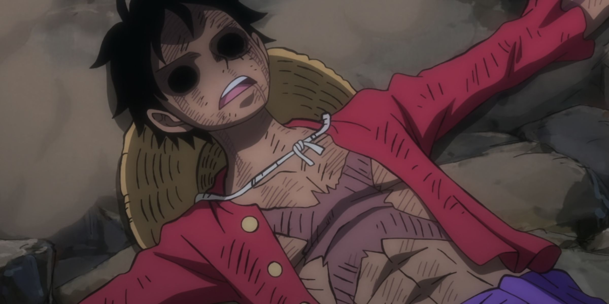
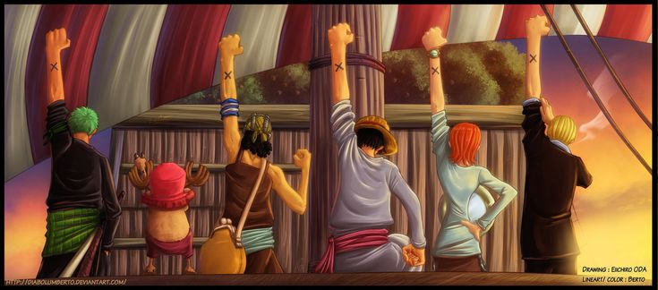
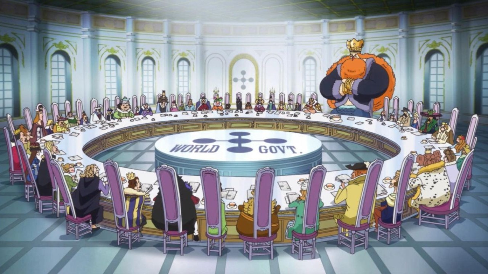

The Fifth Emperor Emerges!
Monkey D. Luffy officially becomes one of the Four Emperors (Yonko) after defeating Kaido in Wano.

The Battle of Marineford
The epic war between the Marines and the Whitebeard Pirates in the attempt to save Ace.

Victory in Alabasta
Luffy's triumphant victory over Crocodile, marking his first major win against a Warlord.

The Reverie
The world-changing meeting of kings where major revelations about the World Government came to light.